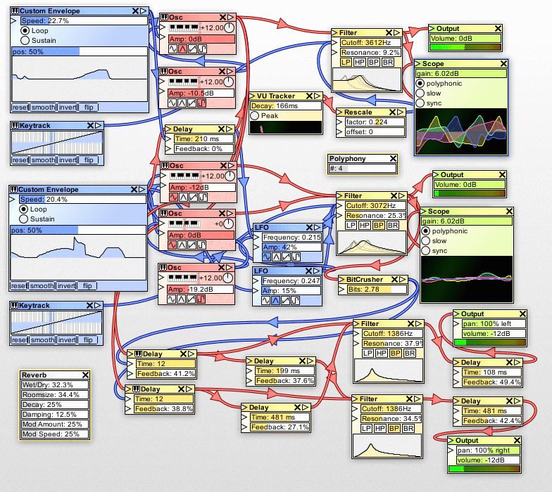

In Workshop 6, I mentioned that although pitch and frequency are closely related, a higher frequency does not imply a higher pitch (at least not a noticeably higher pitch)
This is because, like loudness (volume), pitch is a logarithmic scale
In fact, like loudness, the sound of one pitch is relative to the other
Pitch, for the large part is a discrete scale
Each element in the scale is called an semitone
Music Theory Primer
Western music, today, is clamped to 12 semitones
If, after counting from note 0 to 11, we hit the 12th tone, then, we are looking at a different octave. We are now hearing note 0 of octave 1
Not getting into the details, but the use of 12 semitones was for practical reasons; may or may not be for aesthetic reasons
Music Theory Primer
Although unintuitive, pitch is denoted in either of the following notations:
Do
Re
Mi
Fa
Sol
La
Si/Ti
Do
C
D
E
F
G
A
B
C
0
2
4
5
7
9
11
12
Do note that we are omitting several semitones in the above notations
function synth(s, t) {
// Assuming we are working with CD quality.
var input = (440 * Math.pow(2, s) * t)/44100;
return input - Math.floor(input);
}
Music Synthesis
ADSR envelope
The synths in the last few slides are only intended to output amplitude
What we get is audio that is abruptly cut, but there isn't any smooth transition
the ADSR envolope is intended to apply that smooth transition from maximum amplitude, to entire silence
Think about how an accoustic piano sounds
Music Synthesis
ADSR envelope
Attack: the time in which to increase the volume to the max, as a note is being played
Decay: the time in which to decrease the value to the sustain level, after the max
Sustain: the level to decay to
Release: the time it takes to go entirely silent after releasing the key
These are not set in stone
Effects Composition

Effects Composition
Effects composition is modular
Effects
Gain: outputs a decibel scaling of an input audio
Cutoff: outputs audio that either cuts out particular frequencies, or applies an effect that gives the illusion where specific frequencies were cut out
Delay: outputs the input audio as is, as well as buffer the input. However, after a given time, it will pop out a buffered sample, scale it down, and sum it with the input sample before outputing it; will then buffer the result. Intended to mimic echo
Reverb: tries to mimic echo. Except, unlike delay, it actually tries to mimic the distortion that occurs when a sound is echoed back
Convolution is one way to do it. This is called a "convolution reverb"
Effects Composition in Web Audio API
var input = someActualAudioTrack()
var lowpass = audioContext.createBiquadFilter();
lowpass.type = 'lowpass';
lowpass.frequency.value = 100;
lowpass.gain.value = 0;
var delay = someDelayConstructor();
var reverb = someReverbConstructor();
input.connect(lowpass);
lowpass.connect(delay);
lowpass.connect(reverb);